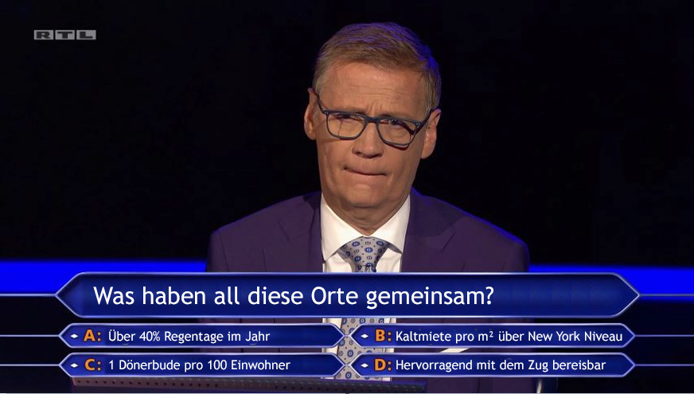

Mit dem Alter wird man ja bekannter Weise etwas senil, deswegen überprüfen wir zur Sicherheit mit folgender Frage deine Gedächtnisleistung:



Das Transportmittel, das dich von München aus ruhig und gemütlich ans Ziel bringt ist ein:

Mit einer Brezn in der Hand und ein wenig Gepäck geht die Reise dann Los. Auf deinem Weg werden dir viele tolle Landschaften begegnen, wie zum Beispiel diese hier:

Alles was dir noch zu einem Glück fehlt ist ein Ticket, so ähnlich wie dieses hier, das bekommst du natürlich von uns:


Wir schicken dich auf eine Reise in der Zukunft in die Vergangenheit. 35 Jahre zurück in eine Stadt voller buntem Leben, gutem Kaffee und kultureller Einflüsse #laBellaVita
Wie du inzwischen vermutlich richtig erkannt hast, geht es in die Stadt die dich vor langer Zeit so verzaubert hat und dir bis heute schöne Erinnerungen bescheert:
Sie liegt am Fuße des Apennin zwischen den Flüssen Reno und Savena. Bologna!
Wir quartieren dich für eine Woche in ein zentrales Hotel mit Bologna-Flair. Hier kannst du nachdem du den Tag mit erkunden verbracht, und jede Menge neue und alte Eindrücke gesammelt hast, deine Müden Füße erholen und entspannt einschlafen und dich auf den nächsten Tag freuen.
Alexi, Kostas und Stephanos